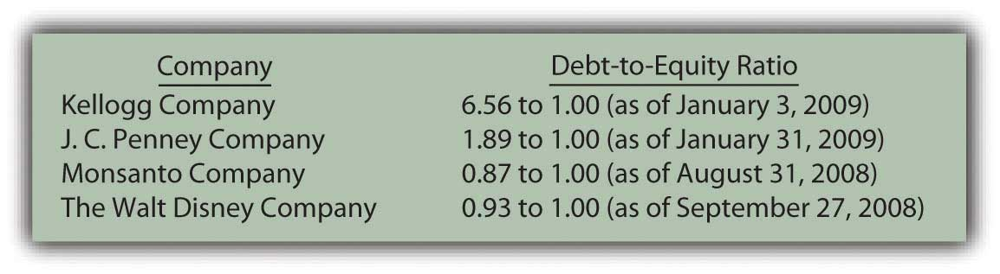
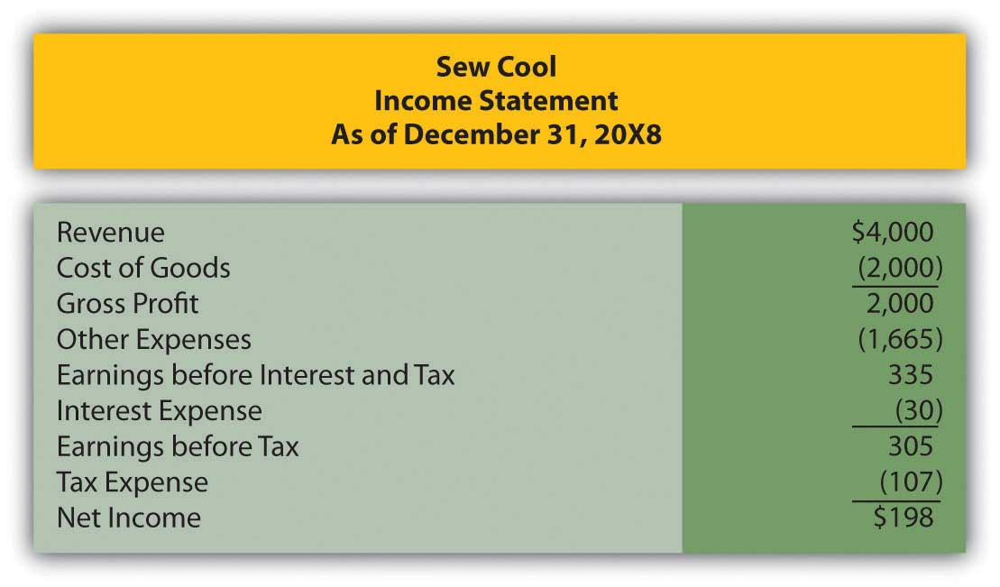

Joe introduces Chapter 15 "In Financial Statements, What Information Is Conveyed about Other Noncurrent Liabilities?" and speaks about the course in general.
At the end of this section, students should be able to meet the following objectives:
Question: Notes and bonds payable serve as the predominant source of reported noncurrent liabilities in the United States. Virtually all companies of any size raise significant sums of money by incurring debts of this type. However, a quick perusal of the financial statements of many well-known companies finds a broad array of other noncurrent liabilities.
These other noncurrent liability figures represent large amounts of debts beyond traditional notes and bonds. Some understanding of such balances is necessary in order to comprehend the information being conveyed in a set of financial statements. The reporting of liabilities such as these is explored in great depth in upper-level financial accounting courses. However, a basic level of knowledge is essential for every potential decision maker, not just those few who chose to major in accounting in college.
In this chapter, leases and related liabilities will be explored first. To illustrate, assume that the Abilene Company needs an airplane to use in its daily operations. Rather than buy this asset, an airplane is leased from a business that owns a variety of aircraft. Perhaps Abilene prefers to push the payments off into the future as far as possible. The lease is for seven years at a cost of $100,000 per year. On the day that this lease is signed, should Abilene report a liability and, if so, is the amount the first $100,000 installment, the $700,000 total of all payments, or some other figure? How is a liability reported in connection with the lease of an asset?
Answer: For the Abilene Company, the liability balance to be reported here cannot be determined based purely on the information that is provided. When a lesseeA party that pays cash for the use of an asset in a lease contract. (the party that will make use of the asset) signs an agreement such as this, the lease transaction can be recorded in one of two ways based on the terms of the contract.
Link to multiple-choice question for practice purposes: http://www.quia.com/quiz/2092984.html
Question: This answer raises a number of immediate questions about lease accounting. Probably the first of these relates to the practical goal of officials who want to produce financial statements that make their company look as healthy and prosperous as possible. A lease agreement might be reported as an operating leaseA rental agreement where the benefits and risks of ownership are not conveyed from the lessor to the lessee. so that only the initial payment is recorded as a liability or as a capital leaseA rental agreement where the benefits and risks of ownership are conveyed from the lessor to the lessee; for accounting purposes, it exists when one of four established criteria are met. whereby the present value of all payments (a much larger number) is shown as the liability. Officials for the lessee must surely prefer to classify all leases as operating leases if that is possible to reduce the reported debt total. In financial reporting for a lessee, is there not a bias to report operating leases rather than capital leases? This desire has to impact the method by which transactions are constructed.
Answer: The answer to this question is obviously “Yes.” If a choice exists between reporting a larger liability (capital lease) or a smaller one (operating lease), officials for the lessee are inclined to take whatever measures are necessary to classify each contract as an operating lease. Financial accounting should report events and not influence them. However, at times, authoritative reporting standards impact the method by which events are structured.
Although Abilene Company is bound by the agreement to pay a much larger amount, only the $100,000 balance due at the time the contract is signed is reported as a liability if usage of the airplane is obtained through an operating lease. The term “off-balance sheet financingDescription used when an entity is obligated for an amount of money that is larger than the amount reported on its balance sheet; for a lessee, an operating lease provides a common example of off-balance sheet financing.” is commonly used when a company is obligated for an amount of money that is larger than the reported debt. Operating leases are one of the primary examples of “off-balance sheet financing.”
For example, as mentioned at the start of this chapter, Sears Holdings Corporation reports a noncurrent liability of about $650 million in connection with its capital leases. As the notes to those financial statements explain, the company has also signed many other operating leases (for the use of stores, office facilities, warehouses, computers and transportation equipment) that will actually require payment of over $6 billion in the next few years. The debt for that additional $6 billion is “off the balance sheet;” it is not included in the liability section of the company’s balance sheet. In accounting for an operating lease, the reported liability balance does not reflect the cash obligation, just the current amount that is due.
Link to multiple-choice question for practice purposes: http://www.quia.com/quiz/2092985.html
Question: For a lessee, a radical reporting difference exists between operating leases and capital leases. Company officials prefer operating leases so that the amount of reported liabilities is lower. What is the distinction between an operating lease and a capital lease?
Answer: In form, all lease agreements are rental arrangements. One party (the lessor) owns legal title to property while the other (the lessee) rents the use of that property for a specified period of time. However, in substance, a lease agreement may go beyond a pure rental agreement. Financial accounting has long held that a fairly presented portrait of an entity’s financial operations and economic health can only be achieved by looking past the form of a transaction in order to report the actual substance of what is taking place. “Substance over form” is a mantra often heard in financial accounting.
Over thirty years ago, FASB issued its Statement 13, “Accounting for Leases,” to provide authoritative guidance for the financial reporting of leases. In paragraph 60 of that pronouncement, FASB states that “a lease that transfers substantially all of the benefits and risks incident to the ownership of property should be accounted for as the acquisition of an asset and the incurrence of an obligation by the lessee.” In substance, the lessee can obtain such a significant stake in leased property that the transaction more resembles a purchase than it does a rental. When the transaction is more like a purchase, it is accounted for as a capital lease. When the transaction is more like a rental, it is accounted for as an operating lease.
Link to multiple-choice question for practice purposes: http://www.quia.com/quiz/2093029.html
Question: A capital lease is accounted for as a purchase because it so closely resembles the acquisition of the asset. An operating lease is less like a purchase and more like a rent. The lessee normally prefers to report such transactions as operating leases to reduce the amount of liabilities shown on its balance sheet. How does an accountant determine whether a contract qualifies as a capital lease or an operating lease?
Answer: In establishing reporting guidelines in this area, FASB created four specific criteria to serve as the line of demarcation between the two types of leases. Such rules set a standard that all companies must follow. If any one of these criteria is met, the lease is automatically recorded by the lessee as a capital lease. Both the asset and liability are reported as if an actual purchase took place. Not surprisingly, accountants study these criteria carefully to determine how the rules can be avoided so that each new contract is viewed as an operating lease.
Note in each of these criteria the rationale for classifying the transaction as a capital lease.
Link to multiple-choice question for practice purposes: http://www.quia.com/quiz/2093008.html
A lessee must account for a lease contract as either an operating lease or a capital lease depending on the specific terms of the agreement. Officials working for the lessee are likely to prefer designation as an operating lease because a smaller liability will be reported. Operating leases are common examples of off-balance sheet financing because a significant portion of the contractual payments are not reported as liabilities on the balance sheet. In contrast, for a capital lease, the present value of all future cash flows must be included as a liability. To differentiate operating leases from capital leases, four criteria have been established by FASB. If any one of these criteria is met, the lessee accounts for the transaction as a capital lease. Thus, although a lease in form, the contract is viewed as a purchase in substance and reported in that manner.
At the end of this section, students should be able to meet the following objectives:
Question: The Abilene Company has agreed to pay $100,000 per year for seven years to lease an airplane. Assume that legal title will not be exchanged and no purchase option is mentioned in the contract. Further assume that the life of the plane is judged to be ten years and that the amount to be paid does not approximate the fair value of the item. The contract is signed on December 31, Year One, with the first annual payment made immediately. This agreement does not appear to meet any of the four criteria for a capital lease. What financial accounting is appropriate for an operating lease?
Answer: None of the four criteria for a capital lease is being met in this transaction:
Thus, this lease is recorded as an operating lease. The first annual payment was made immediately to cover the subsequent year.
Figure 15.1 December 31, Year One—Payment of First Installment of Operating Lease

Because the first payment has been made, no liability is reported on Abilene’s balance sheet although the contract specifies that an additional $600,000 in payments will be required over the subsequent six years. In addition, the airplane itself is not shown as an asset by the lessee because this operating lease is viewed as the equivalent of a rent and not a purchase.
During Year Two, the future value provided by the first prepayment gradually becomes a past value because of the passage of time. The asset balance is reclassified as an expense. At the end of that period, the second payment will also be made.
Figure 15.2 December 31, Year Two—Adjustment to Record Rent Expense for Year Two

Figure 15.3 December 31, Year Two—Payment of Second Installment of Operating Lease

Question: One slight change can move this contract from an operating lease to a capital lease. Assume all the information remains the same in the above example except that the airplane has an expected life of only nine years rather than ten. With that alteration, the life of the lease is 77.8 percent of the life of the asset (seven years out of nine years). That is 75 percent or more of the life of the asset. Because one of the criteria is now met, this contract must be viewed as a capital lease. The change in that one estimation creates a major impact on the reporting process. How is a capital lease reported by the lessee?
Answer: As a capital lease, the transaction is reported in the same manner as a purchase. Abilene has agreed to pay $100,000 per year for seven years but no part of this amount is specifically identified as interest. According to U.S. GAAP, if a reasonable rate of interest is not explicitly paid each period, a present value computation is required to divide the contractual payments between principal (the amount paid for the airplane) and interest (the amount paid to extend payment over this seven-year period). This handling is appropriate for an actual purchase when payments are made over time but also for a capital lease.
Before the lessee starts computing the present value of the future cash flows, one issue must be resolved: the appropriate rate of interest to be applied. In the previous chapter, a negotiated rate was established by the buyer and seller of a bond prior to its issuance. Normally, no such bargained rate exists in connection with a lease. Therefore, the lessee uses its own incremental borrowing rate. That is the interest rate the lessee would be forced to pay if this same amount of money was borrowed from a bank or other lending institution.As explained in upper-level accounting textbooks and courses, under certain circumstances, the lessee might use the implicit interest rate built into the lease contract by the lessor. Assume here that the incremental borrowing rate for Abilene is 10 percent per year. If the company had signed a loan to buy this airplane instead of lease it, the annual interest rate demanded by the lender is assumed to be 10 percent.
Abilene will pay $100,000 annually over these seven years. Because the first payment is made immediately, these payments form an annuity due. As always, the present value calculation computes the interest at the appropriate rate and then removes it to leave the principal: the amount paid for the airplane. Once again, present value can be found by table, by formula, or by Excel spreadsheet.The mathematical formula to determine the present value of an annuity due of $1 per period is [(1 – 1/[1 + i]n)/i] × (1 + i), where i is the appropriate interest rate and n is the number of payment periods. On an Excel spreadsheet, the present value of a $1 per period annuity due for seven periods at an assumed annual interest rate of 10 percent is computed by typing the following data into a cell: =PV(.10,7,1,,1).
http://www.principlesofaccounting.com/ART/fv.pv.tables/pvforannuitydue.htm
Present value of an annuity due of $1 per year for seven years at a 10 percent annual interest rate is $5.35526. The present value of seven payments of $100,000 is $535,526.
present value = $100,000 × 5.35526 present value = $535,526Once present value has been determined, the recording of the capital lease can proceed very much like a purchase made by signing a long-term liability.
Figure 15.4 December 31, Year One—Capital Lease Recorded at Present Value

Figure 15.5 December 31, Year One—Initial Payment on Capital Lease

A comparison at this point between the reporting of an operating lease and a capital lease is striking. The differences are not inconsequential. For the lessee, good reasons exist for seeking an operating lease rather than a capital lease.
Figure 15.6 Comparison of Reported Amounts for Operating Lease and for Capital Lease

Link to multiple-choice question for practice purposes: http://www.quia.com/quiz/2092986.html
Question: In a capital lease, the property is not bought but is accounted for as if it had been purchased. Abilene records both the leased airplane and the liability at the present value of the required cash payments. What reporting takes place subsequent to the initial recording of a capital lease transaction?
Answer: As with any purchase of an asset having a finite life where payments extend into the future, the cost of the asset is depreciated and interest is recognized in connection with the liability. This process remains the same whether the asset is bought or obtained by a capital lease.
Depreciation. The airplane will be used by Abilene for the seven-year life of the lease. The recorded cost of the asset is depreciated over this period to match the expense recognition with the revenue that the airplane helps generate. If the straight-line method is applied, annual depreciation is $76,504 (rounded) or $535,526/7 years.
Interest. The principal of the lease liability during Year Two is $435,526. That is the initial $535,526 present value less the first payment of $100,000. The annual interest rate used in determining the present value was 10 percent so interest expense of $43,553 (rounded) is recognized for this period of time—the principal of $435,526 times this 10 percent annual rate. As in Chapter 14 "In a Set of Financial Statements, What Information Is Conveyed about Noncurrent Liabilities Such as Bonds?", the effective rate method is applied here. Both the asset and liability are reported as if the asset had been bought for these payments. That is the fundamental idea of a capital lease.
Figure 15.7 December 31, Year Two—Depreciation of Airplane Obtained in Capital Lease

Figure 15.8 December 31, Year Two—Interest on Lease Liability from Capital Lease

Figure 15.9 December 31, Year Two—Second Payment on Capital Lease

Link to multiple-choice question for practice purposes: http://www.quia.com/quiz/2093031.html
Following is a continuation of our interview with Robert A. Vallejo, partner with the accounting firm PricewaterhouseCoopers.
Question: In U.S. GAAP, if a lease arrangement meets any one of four criteria, the transaction is reported as a capital lease. Companies often design transactions to either avoid or meet these criteria based on the desired method of accounting. Do IFRS requirements utilize the same set of criteria to determine whether a capital lease or an operating lease has been created?
Rob Vallejo: A lease contact may well be classified differently under IFRS than under U.S. GAAP. This is an example of where U.S. GAAP has rules and IFRS has principles. Under U.S. GAAP, guidance is very specific based on the four rigid criteria established by FASB. However, under IFRS, the guidance focuses on the substance of the transaction and there are no quantitative breakpoints or bright lines to apply. For example, there is no definitive rule such as the “75 percent of the asset’s life” criterion found in U.S. GAAP. IFRS simply asks the question: have substantially all the risks and rewards of ownership been transferred? Therefore, this difference could be significant to those organizations that have designed their leases to fit into a certain category under U.S. GAAP. More of these contacts will probably be accounted for as capital leases (which are referred to as finance leases in IFRS). This issue could be resolved in the near term, as FASB and IASB are conducting a joint project to modify their respective standards by 2011.
Operating leases record amounts as they come due and are paid. Therefore, the only reported asset is a prepaid rent and the liability is the current amount due. In contrast, for a capital lease, the present value of the future cash payments is determined using the incremental borrowing rate of the lessee. That amount is recorded as both the leased asset and the lease liability. The asset is then depreciated over the time that the lessee will make use of it while interest expense is recorded (along with periodic payments) in connection with the liability.
At the end of this section, students should be able to meet the following objectives:
Question: At the beginning of this chapter, mention was made that Southwest Airlines reported deferred income taxes at the end of 2008 as a noncurrent liability of $1.9 billion. Such an account balance is not unusual. The Kroger Co. listed a similar $384 million debt on its January 31, 2009, balance sheet. At approximately the same time, Ford Motor Company reported a $614 million deferred tax liabilityA balance sheet account indicating a smaller current payment of income taxes but with a higher amount due in the future; taxable income will be higher than book income in the future, which necessitates the reporting of the liability. for its automotive business and another $3.28 billion for its financial services division. What is the meaning of these accounts? How is a deferred income tax liability created?
Answer: The reporting of deferred income tax liabilities is, indeed, quite prevalent. One survey in 2007 found that approximately 70 percent of businesses included a deferred tax balance within their noncurrent liabilities.Yury Iofe, senior editor, and Matthew C. Calderisi, CPA, managing editor, Accounting Trends & Techniques, 62nd edition (New York: American Institute of Certified Public Accountants, 2008), 266. Decision makers need to have a basic understanding of any account that is so commonly encountered in a set of financial statements.
In the discussion of LIFO presented in Chapter 9 "Why Does a Company Need a Cost Flow Assumption in Reporting Inventory?", the point was made that financial accounting principles and income tax rules are not identical. In the United States, financial information is presented based on the requirements of U.S. GAAP while income tax figures are determined according to the Internal Revenue Code. At many places, these two sets of guidelines converge. For example, if a grocery store sells a can of tuna fish for $6 in cash, the revenue is $6 on both the reported financial statements and the income tax return. However, at a number of critical junctures, the recognized amounts can be quite different.
Where legal, companies frequently exploit these differences for their own benefit by delaying tax payments. The deferral of income taxes is usually considered a wise business strategy because it allows the company to use its cash for a longer period of time and, hence, generate additional revenues. If an entity makes a 10 percent return on its assets and manages to defer a tax payment of $100 million for one year, the additional profit to be earned is $10 million ($100 million × 10 percent).
Businesses commonly attempt to reduce current taxable income by moving it into the future. In general, this is the likely method used by Southwest, Kroger, and Ford to create their deferred tax liabilities.
In both of these cases, taxable income is reduced in the current period (revenue is moved out or expense is moved in) but increased at a later time (revenue is moved in or expense is moved out). Because a larger tax will have to be paid in the subsequent period, a deferred income tax liability is reported.
Deferred income tax liabilities are easiest to understand conceptually by looking at revenues and gains. Assume that a business reports revenue of $100 on its Year One income statement. Because of certain tax rules and regulations, assume that this amount will not be subject to income taxation until Year Six. The $100 is referred to as a temporary tax differenceAn amount reported as either a revenue or an expense for both financial accounting and income tax purposes but in two different time periods; leads to the recognition of deferred income taxes.. It is reported for both financial accounting and tax purposes but in two different time periods.
If the effective tax rate is 40 percent, the business records a $40 ($100 × 40 percent) deferred income tax liability on its December 31, Year One, balance sheet. This amount will be paid to the government but not until Year Six when the revenue becomes taxable. The revenue is recognized now according to U.S. GAAP but in a later year for income tax return purposes. Net income is higher in the current year than taxable income, but taxable income will be higher by $100 in the future. Payment of the $40 in income taxes on that $100 difference is delayed until Year Six.
Simply put, a deferred income tax liabilityMany companies also report deferred income tax assets that arise because of other differences in U.S. GAAP and the Internal Revenue Code. For example, Southwest Airlines included a deferred income tax asset of $365 million on its December 31, 2008, balance sheet. Accounting for such assets is especially complex and will not be covered in this textbook. Some portion of this asset balance, although certainly not all, is likely to be the equivalent of a prepaid income tax where the company was required to make payments by the tax laws in advance of recognition according to U.S. GAAP. is created when an event occurs now that will lead to a higher amount of income tax payment in the future.
Link to multiple-choice question for practice purposes: http://www.quia.com/quiz/2093032.html
Question: Deferring the payment of an income tax liability does not save a company any money. This process merely delays recognition for tax purposes until a later period. Payment is put off for one or more years. If no tax money is saved, why do companies seek to create deferred income tax liabilities? Why not just pay the income tax now and get it over with?
Answer: As discussed above, delaying the mailing of an income tax check to the government allows a company to make use of its money for a longer period of time. When the cash is paid, it is gone and provides no further benefit to the company. As long as the money is still held, it can be used by management to buy inventory, acquire securities, pay for advertising, invest in research and development activities, and the like. Thus, a common business strategy is to avoid paying taxes for as long as legally possible so that more income can be generated from these funds before they are turned over to the government.
Question: Assume that the Hill Company buys an asset (land, for example) for $150,000. Later, this asset is sold for $250,000 in Year One. The earning process is substantially complete at that point so Hill reports a gain on its Year One income statement of $100,000 ($250,000 less $150,000). Because of the terms of the sales contract, the money will not be collected from the buyer until Year Four (20 percent) and Year Five (80 percent). The buyer is financially strong and expected to pay at the required times. Hill’s effective tax rate for this transaction is 30 percent.
Officials for Hill are pleased to recognize the $100,000 gain on this sale in Year One because it makes the company looks better. However, they prefer to wait as long as possible to pay the income tax especially since no cash has yet been collected from the buyer. How can the recognition of income be deferred for tax purposes so that a deferred income tax liability is reported?
Answer: According to U.S. GAAP, this $100,000 gain is recognized in Year One based on accrual accounting. The earning process is substantially complete and the amount to be collected can be reasonably estimated. However, if certain conditions are met, income tax laws permit taxpayers to report such gains using the installment sales method.The installment sales method can also be used for financial reporting purposes but only under very limited circumstances. In simple terms, the installment sales method allows a seller to delay the reporting of a gain until cash is collected. The gain is recognized proportionally based on the amount of cash received. If 20 percent is collected in Year Four, then 20 percent of the gain becomes taxable in that year.
In this illustration, no cash is received in Year One so no taxable income is reported.
Figure 15.10 Year One—Comparison of Financial Reporting and Tax Reporting

The eventual tax to be paid on the gain will be $30,000 ($100,000 × 30 percent). How is this $30,000 reported in Year One if payment is not required until Years Four and Five?
First, because of the matching principle, an expense of $30,000 is recorded in Year One. As can be seen above, the $100,000 gain is reported on the income statement in that year. Any related expense should be recognized in the same period. That is the basic premise of the matching principle.
Second, the $100,000 gain creates a temporary difference. The amount will become taxable when the cash is collected. At that time, a tax payment of $30,000 is required. Accountants have long debated whether this liability is created when the income is earned or when the payment is to be made. In legal terms, the company does not owe any money to the government until the Year Four and Year Five tax returns are filed. However, U.S. GAAP states that recognition of the gain in Year One creates the need to report the liability. Thus, a deferred income tax liability is also recorded at that time.
Consequently, the following adjusting entry is included at the end of Year One so that both the expense and the liability are properly reported.
Figure 15.11 December 31, Year One—Recognition of Deferred Income Tax on Gain
In Year Four, the customer is expected to pay the first 20 percent of the $250,000 sales price ($50,000). If that payment is made at that time, 20 percent of the gain becomes taxable and the related liability comes due. Because $20,000 of the gain (20 percent of the total) is now reported within taxable income, a $6,000 payment ($20,000 gain × 30 percent tax rate) is made to the government, which reduces the deferred income tax liability.
Link to multiple-choice question for practice purposes: http://www.quia.com/quiz/2092988.html
U.S. GAAP and the Internal Revenue Code are created by separate groups with different goals in mind. Consequently, many differences exist as to amounts and timing of income recognition. Business officials like to use these differences to postpone the payment of income taxes so that the money can remain in use and generate additional profits. Although payment is not made immediately, the matching principle requires the expense to be reported in the same time period as the related revenue. In recognizing this expense, a deferred income tax liability is also created that remains in the financial records until payment is made. One of the most common methods for deferring income tax payments is application of the installment sales method. According to that method, recognition of the profit on a sale is delayed until cash is collected. In the interim, a deferred tax liability is reported to alert decision makers to the eventual payment that will be required.
At the end of this section, students should be able to meet the following objectives:
Question: According to the information at the beginning of this chapter, Alcoa reported a $2.73 billion liability at the end of 2008 for accrued postretirement benefits. What constitutes a postretirement benefit?
Answer: In a note to the Alcoa financial statements, the company explains part of this liability amount as follows:
“Alcoa maintains health care and life insurance benefit plans covering eligible U.S. retired employees and certain retirees from foreign locations. Generally, the medical plans pay a percentage of medical expenses, reduced by deductibles and other coverages. These plans are generally unfunded, except for certain benefits funded through a trust. Life benefits are generally provided by insurance contracts. Alcoa retains the right, subject to existing agreements, to change or eliminate these benefits.”
Postretirement benefits cover a broad array of promises that companies make to their employees to boost morale and keep them from seeking other jobs. Alcoa is providing two of the most common: health care insurance and life insurance. Based on stipulations that may be required for eligibility, Alcoa helps employees by paying a portion of their insurance cost even after they have retired. This benefit is apparently earned by working for the company. After a person retires, Alcoa continues to provide these payments as a reward for years of employee service.
Question: Assume that one of the employees for the Michigan Company is currently thirty-four years old and is entitled to retirement benefits starting at the age of sixty-five. Michigan has promised to continue paying health care and life insurance premiums for all retirees as long as they live.Health care and life insurance benefits paid by an employer while an employee is still working do not pose an accounting issue. The amounts are known and can be expensed as incurred. These expenses are matched with the revenues being earned at the current time.For this employee, no postretirement benefits will be paid for thirty-one years (65 less 34) but then an unknown payment amount will continue for an unknown period of time. In Chapter 2 "What Should Decision-makers Know So That Good Decisions Can Be Made about an Organization?", the challenge presented to accountants as a result of future uncertainty was discussed. Probably no better example can be found than postretirement benefits. For example, if this employee lives to be ninety-four, these insurance payments will continue until sixty years into the future.
The employee is helping the company generate revenues currently so that, once again, the related expense should be recognized now according to the matching principle. Although this obligation might extend for decades, both the expense and related liability are recorded when the person is actually working for the company and earning these benefits.
How is the amount of this obligation possibly determined? An employee might retire at sixty-five and then die at sixty-six or live to be ninety-nine. Plus, estimating the cost of insurance (especially medical insurance) over several decades into the future seems to be a virtually impossible challenge. The skyrocketing cost of health care is difficult to anticipate months in advance, let alone decades. The dollar amount of the company’s obligation for these future costs appears to be a nebulous figure at best. In this textbook, previous liabilities have been contractual or at least subject to a reasonable estimation prior to recognition. How is the liability calculated that will be reported by a company for the postretirement benefits promised to its employees?
Answer: As shown by the Alcoa example, postretirement benefits are estimated and reported according to U.S. GAAP while employees work. Because of the length of time involved and the large number of variables (some of which, such as future health care costs, are quite volatile), a precise determination of this liability is impossible. In fact, it may be the most uncertain number found on any set of financial statements. FASB apparently believes that reporting a dollar amount for postretirement benefits, despite its inexactness, is more helpful than omitting the expense and liability entirely. Decision makers need to understand that these reported balances are no more than approximations.
The actual computation and reporting of postretirement benefits is more complicated than can be covered adequately in an introductory financial accounting textbook. An overview of the basic steps, though, is useful in helping decision makers understand the information that is provided.
To determine the liability to be reported for postretirement benefits that are earned now but only paid after retirement, the Michigan Company takes two primary steps. First, an actuaryAn individual who mathematically computes the likelihood of future events. calculates an estimation of the cash amounts that will eventually have to be paid as a result of the terms promised to employees. “An actuary is a business professional who analyzes the financial consequences of risk. Actuaries use mathematics, statistics, and financial theory to study uncertain future events, especially those of concern to insurance and pension programs.”http://www.math.purdue.edu/academic/actuary/what.php?p=what. In simpler terms, an actuary is an expert who mathematically computes the likelihood of future events.
For postretirement benefitsPromises such as pension payments, health care insurance coverage, and life insurance benefits made by employers to eligible employees to be received after they reach a specified retirement age., the actuary has to make a number of estimations such as the average length of the employees’ lives and the approximate future costs of health care and life insurance (and any other benefits provided to retirees) based on all available data. For example, an actuary’s calculations might indicate that these costs will average $10,000 per year for the twenty years that an employee is expected to live following retirement.
The future payments are estimated by an actuary but they must often be projected decades into the future. Thus, as the second step in this process, the present value of these amounts is calculated to derive the figure to be reported currently on the balance sheet. Once again, as in previous chapters, interest for this period of time is determined mathematically and removed to leave just the principal of the obligation as of the balance sheet date. That is the amount reported within noncurrent liabilities.
| Determining Accrued Postretirement Benefits |
|---|
| Step One: Estimate Future Payments |
| Step Two: Calculate Present Value of Estimated Future Payments |
Link to multiple-choice question for practice purposes: http://www.quia.com/quiz/2093033.html
Question: Alcoa is recognizing an accrued postretirement benefit liability of $2.73 billion. This number is an estimation of the total amount that the company will have to pay starting when each employee retires, a figure that is then subjected to a present value computation. Except for the inherent level of uncertainty, the accounting process seems reasonable. At one time, companies were not required to recognize this obligation. The liability was ignored and costs were simply expensed as paid. Only after advanced computer technology and sophisticated mathematical formulas became available was the reporting of this liability mandated by FASB. What is the impact of reporting postretirement benefits if the number is only an approximation?
Answer: Organizations typically prefer not to report data that appear to weaken the portrait of their economic health and vitality. However, better decisions are made by all parties when more information is readily available. Transparency is a primary goal of financial accounting. Arguments can be made that some part of the problems that automobile and some other businesses currently face are the result of promises that were made over the past few decades where the eventual costs were not properly understood.
As the result of the evolution of U.S. GAAP, decision makers (both inside and outside the company) can now better see the costs associated with postretirement benefits. Not surprisingly, once disclosed, some companies opted to cut back on the amounts promised to retirees. The note quoted above for Alcoa goes on further to say, “All U.S. salaried and certain hourly employees hired after January 1, 2002, will not have postretirement health care benefits. All U.S. salaried and certain hourly employees that retire on or after April 1, 2008, will not have postretirement life insurance benefits” (emphasis added).
For the employees directly impacted, these decisions may have been quite alarming. However, by forcing the company to recognize this liability, U.S. GAAP has helped draw attention to the costs of making such promises.
Link to multiple-choice question for practice purposes: http://www.quia.com/quiz/2092990.html
Question: In previous chapters, various vital signs have been examined—numbers, ratios, and the like that help decision makers evaluate an entity’s financial condition and future prospects. In connection with liabilities, do any specific vital signs exist that are frequently relied on to help assess the economic health of a business or other organization?
Answer: One vital sign that is often studied by decision makers is the debt-to-equity ratioA measure of a company’s use of debt for financing purposes; it is computed by dividing total liabilities by total stockholders’ equity. This figure is simply the total liabilities reported by a company divided by total stockholders’ equity. The resulting number indicates whether the company gets most of its assets from borrowing and other debt or from its operations and owners. A high debt-to-equity ratio indicates that a company is highly leveraged. As discussed in Chapter 14 "In a Set of Financial Statements, What Information Is Conveyed about Noncurrent Liabilities Such as Bonds?", that raises the level of risk but also increases the possible profits earned by stockholders. Relying on debt financing makes a company more vulnerable to bankruptcy and other financial problems but also provides owners with the chance for higher financial rewards.
Recent debt-to-equity ratios shown below for several prominent companies show a wide range of results. No single financing strategy is evident here. The debt-to-equity ratio is not just indicative of a company’s selected policy. In some industries, debt levels tend to be higher than in others. Also, individual responses to the recent economic recession might have impacted some companies more than others.
Figure 15.12 Recent Debt-to-Equity Ratios for Several Prominent Companies
Another method to evaluate the potential problem posed by debts is to compute the times interest earned (TIE)A measure of a company’s ability to meet its obligations as they come due; it is computed by taking EBIT (earnings before interest expense and income taxes) and dividing that number by interest expense for the period. ratio. Normally, debt only becomes a risk if interest cannot be paid when due. This calculation helps measure how easily a company has been able to meet its interest obligations through current operations.
Times interest earned begins with the company’s net income before both interest expense and income taxes are removed (a number commonly referred to as EBIT). Interest expense for the period is then divided into this income figure. For example, if EBIT is $500,000 and interest expense is $100,000, the reporting company earned enough during the year to cover the required interest obligations five times.
Figure 15.13 Recent Times Interest Earned for Several Prominent Companies

Link to multiple-choice question for practice purposes: http://www.quia.com/quiz/2092991.html
Businesses and other organizations often promise benefits (such as medical insurance and life insurance coverage) to eligible employees for the years after they reach retirement age. Determining the related liability poses a significant challenge for accountants because the eventual payment amounts are so uncertain. An actuary uses historical data, computer programs, and statistical models to estimate these amounts. The present value of these projected cash payments is then calculated and recognized as a noncurrent liability. The size of this debt can be quite large but the numbers are no more than approximations. Decision makers often analyze the level of a company’s debt by computing the debt-to-equity ratio and the times interest earned ratio. Both of these calculations help decision makers evaluate the risk and possible advantage of the current degree of debt financing.
Following is a continuation of our interview with Kevin G. Burns.
Question: Lease arrangements are quite common in today’s business environment. For a capital lease, the present value of the future payments is reported by the lessee as a liability. In contrast, for an operating lease, only the amount currently due is included on the balance sheet as a liability. The reporting of such off-balance sheet financing has been criticized because businesses often go out of their way to create operating leases to minimize the total shown for their debts. However, information about these operating leases must be clearly disclosed in the notes to the financial statements. Are you concerned when you see a company with a lot of off-balance sheet financing? Would you prefer a system where companies had to report more of their debts from leasing arrangements? Do you believe off-balance sheet financing is a problem for the users of financial accounting information?
Kevin Burns: I hate off balance sheet financing. It is trickery in my opinion. As usual, I prefer full or even too much disclosure. A lease is a liability. It should be categorized as such. It is really quite simple—show the liability. Having information in the notes helps but liabilities should be reported on the balance sheet for all to see easily. Anything that reduces transparency is bad for the accounting industry and the people relying on reported financial information.
Joe talks about the five most important points in Chapter 15 "In Financial Statements, What Information Is Conveyed about Other Noncurrent Liabilities?".
Which of the following is not a criterion that triggers capital lease recording?
Charlotte Company leases a piece of equipment on February 1. The lease covers two years and the life of the equipment is four years. There is no bargain purchase option, the equipment does not transfer to Charlotte at the end of the lease, and the payments do not approximate the fair value of the equipment. The payments are $4,000 due each February 1, starting with the current one. Charlotte’s incremental borrow rate is 5 percent. What journal entry(ies) should Charlotte make on February 1?
Figure 15.14

Figure 15.15
Figure 15.16

Figure 15.17
Sellers Corporation has assets of $450,000 and liabilities of $200,000. What is Sellers’ debt-to-equity ratio?
Which of the following is not a true statement about postretirement benefits?
Which of the following concerning deferred tax liabilities are true?
Myers Company leases a boat on January 1, 20X9. The lease qualifies as a capital lease. The lease covers four years, with payments of $20,000 annually, beginning on January 1, 20X9. The expected life of the boat is six years. Myers incremental borrowing rate is 4 percent. What amount of depreciation (rounded) should Myers recognize on the boat on December 31, 20X9 if Myers uses the straight-line method?
Which of the following is true concerning leases?
Hyde Corporation has long-term liabilities, such as bonds, notes and leases, for which interest expense must be accrued. During 20X7, Hyde had earnings before interest and taxes of $45,890 and interest expense of $9,920. Which of the following is Hyde’s times interest earned?
Fargo Corporation earns revenue in 20X2 that will be reported on its 20X2 income statement, but will not be reported on its tax return until 20X4. The revenue amounts to $800,000 and Fargo’s tax rate is 40 percent. Which of the following is a true statement?
United Company leases an office space in a downtown building. This qualifies as an operating lease. United pays $30,000 in advance for rent every quarter. Record journal entries for United for the following:
Ralph Corporation agreed to lease a piece of equipment to Amy Company on January 1, 20X4. The following info relates to the lease:
Prepare the following journal entries for Amy.
Landon Corporation has decided to rent crew trucks rather than purchasing them. On April 1, 20X5, Landon enters into an agreement with TuffEnough Trucks to lease three trucks worth $200,000. The lease agreement will span six years and the life of the trucks is estimated to be seven years. Landon’s incremental borrowing rate is 6 percent. The payments per year amount to $38,370, payable each April 1, beginning with 20X5.
In several past chapters, we have met Heather Miller, who started her own business, Sew Cool. The financial statements for December are shown below.
Figure 15.18 Sew Cool Financial Statements
Figure 15.19

Figure 15.20

Based on the financial statements determine the following:
Lori Company borrowed $10,000 from Secure Bank on January 1, 20X9. The interest rate on the loan is 6 percent annually. Lori also signed a five-year capital lease on January 1, 20X9. The payments are $5,000 each January 1, beginning with the current one. Lori’s incremental borrowing rate is 6 percent and the value of the leased asset is $22,326.
Myrtle Inc. begins 20X8 with liabilities of $456,000 and owners’ equity of $320,000. On the first day of 20X8, the following occur:
This problem will carry through several chapters, building in difficulty. It allows students to continuously practice skills and knowledge learned in previous chapters.
In Chapter 14 "In a Set of Financial Statements, What Information Is Conveyed about Noncurrent Liabilities Such as Bonds?", you prepared Webworks statements for February. They are included here as a starting point for March.
Figure 15.21 Webworks Financial Statements

Figure 15.22

Figure 15.23

The following events occur during March:
a. Webworks starts and completes seven more Web sites and bills clients for $5,000.
b. Webworks purchases supplies worth $110 on account.
c. At the beginning of March, Webworks had nineteen keyboards costing $118 each and twenty flash drives costing $22 each. Webworks uses periodic FIFO to cost its inventory.
d. On account, Webworks purchases 80 keyboards for $120 each and 100 flash drives for $23 each.
e. Webworks sells eighty-five keyboards for $12,750 and ninety-two of the flash drives for $2,760 cash.
f. Webworks collects $5,000 in accounts receivable.
g. Webworks pays off $12,000 of its accounts payable.
h. Leon determines that some of his equipment is not being used and sells it. The equipment sold originally cost $2,000 and had accumulated depreciation of $297. Webworks sold the equipment for $1,650 cash.
i. Webworks pays Nancy $750 for her work during the first three weeks of March.
j. Leon and Nancy are having trouble completing all their work now that the business has grown. Leon hires another assistant, Juan. Webworks pays Juan $550 for his help during the first three weeks of March.
k. Webworks writes off an account receivable from December in the amount of $200 because collection appears unlikely.
l. Webworks pays off its salaries payable from March.
m. Webworks pays Leon a salary of $3,500.
n. Webworks completes the design for the bakery, but not the photographer for which it was paid in February. Only $300 of the unearned revenue should be reclassified to revenue.
o. Webworks decides that more space is needed than that which is available in the home of Leon’s parents (much to his parents’ relief). His parents return the $200 he prepaid for March. Webworks signs a six-month lease in a nearby office building. Webworks will pay $500 at the beginning of each month, starting on March 1. The life of the building is forty years, and no bargain purchase option exists, nor do the payments come close to paying the market value of the space.
p. Webworks pays taxes of $580 in cash.
Required:
A. Prepare journal entries for the above events.
B. Post the journal entries to T-accounts.
C. Prepare an unadjusted trial balance for Webworks for March.
D. Prepare adjusting entries for the following and post them to your T-accounts.
q. Webworks owes Nancy $200 and Juan $150 for their work during the last week of March.
r. Webworks receives an electric bill for $400. Webworks will pay the bill in April.
s. Webworks determines that it has $50 worth of supplies remaining at the end of March.
t. Webworks is continuing to accrue bad debts at 10 percent of accounts receivable.
u. Webworks continues to depreciate its equipment over five years and its furniture over five years, using the straight-line method.
v. The license agreement should be amortized over its one-year life.
w. QRS Company is selling for $13 per share and RST Company is selling for $18 per share on March 31.
x. Interest should be accrued for March.
y. Record cost of goods sold.
E. Prepare an adjusted trial balance.
F. Prepare financial statements for March.